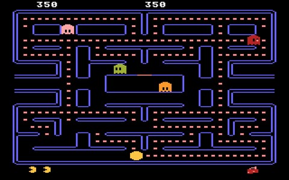
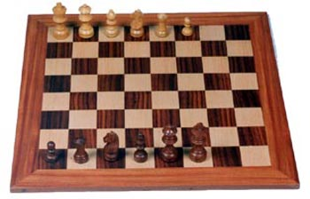
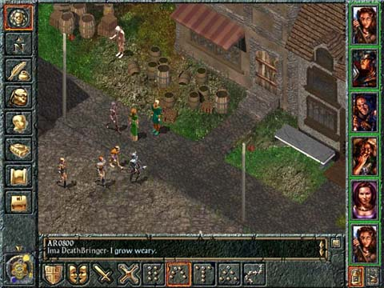
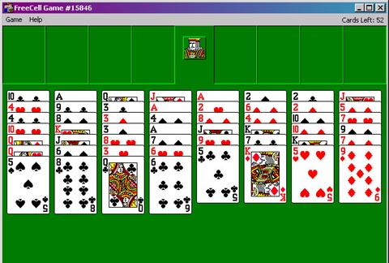

La rejouabilité, partie 2 : les mécaniques de jeux
L'article original est écrit par Ernest Adams publié par Gamasutra (juillet 2001).
L'auteur original n'est en aucun cas reponsable de la précision de cette traduction.
Le mois dernier [NDT : c'est-à-dire dans l'article précédent], j'ai jeté un œil à la façon dont les dispositifs narratifs impactent la rejouabilité d'un jeu. Cette fois-ci, j'examinerai comment la rejouabilité est impactée par les mécaniques de jeux elles-mêmes.

De façon évidente, la contribution la plus importante à la rejouabilité d'un jeu, c'est sa jouabilité. Si un jeu est mal équilibré, si son interface utilisateur est mauvaise, s'il semble lui manquer des fonctionnalités essentielles, alors ce ne sera pas très amusant d'y jouer, et encore moins d'y rejouer. Mais il y a des considérations plus spécifiques qui entrent en ligne de compte dans la rejouabilité d'un jeu, et c'est de celles-ci que je vais parler ici.
Commençons en prenant l'exemple d'un jeu vidéo basique avec un seul joueur. Le joueur percevra le jeu comme rejouable en partie en fonction du type de joueur dont il fait partie. Imaginons deux vieux amis, le hardcore gamer et le casual gamer (voyez à ce sujet mon précédent article, « Casual versus Core » pour une discussion sur ceux-là [NDT : nous le traduirons bientôt :) ]). Un hardcore gamer s'intéresse principalement à finir le jeu. Du moment que le gameplay est intéressant et surtout représente un vrai défi, il continuera à jouer de façon répétée jusqu'à l'avoir complètement fini, même si le gameplay reste très similaire à chaque fois. Le hardcore gamer n'a aucun problème avec un jeu comme Pac-Man, parce même si Pac-Man est un jeu déterministe qui se déroule exactement de la même façon à chaque fois que vous y jouez, il propose un énorme volume de jeu. Pac-Man contient 256 niveaux et très, très peu de gens les ont tous vus. Le hardcore gamer n'est pas gêné par un jeu qui se rejoue à chaque fois de la même manière, du moment qu'on lui propose un défi amusant et relevé.

C'est la raison pour laquelle les jeux d'arcade sont conçus pour les hardcore gamers et pour laquelle ils rapportent tant d'argent. La plupart des jeux d'arcade proposent un grand nombre de niveaux de difficulté progressive et beaucoup ont un gameplay déterministe. Ce gameplay déterministe permet au hardcore gamer de traverser rapidement les premiers niveaux, qui sont faciles, et d'arriver aux niveaux plus difficiles où se trouve le véritable défi. La plupart des jeux d'arcade sont absolument impossibles à finir : ils deviennent simplement de plus en plus rapides, jusqu'à ce qu'aucun être humain ne puisse plus suivre. Ceci signifie que le but n'est pas de finir le jeu, mais de battre son propre record, et c'est quelque chose qu'on peut toujours faire quelque soit le nombre de fois où l'on a joué au jeu. Les hardcore gamers abandonnent un jeu d'arcade quand ils sont lassés du gameplay ou quand ils ont atteint un niveau au-delà duquel ils ne peuvent simplement plus s'améliorer, et quand un hardcore gamer finit un jeu une bonne fois pour toute, y rejouer l'intéresse rarement. Le plaisir vient de la victoire et puisqu'il sait déjà comment finir le jeu, il n'y a plus de défi.
Le casual gamer d'un autre côté, joue non pas pour l'euphorie de la victoire, mais pour le plaisir de jouer. Il ne se contente pas simplement d'un défi relevé : il faut qu'il s'agisse d'un bon moment et pour qu'un casual gamer continue de jouer, il a besoin de variété. Le jeu doit être différent à chaque partie.
Différentes sources de variété
La variété dans les jeux peut se manifester de différents façons.
Conditions de départ variables La plupart des jeux de plateau simples comme les échecs, les dames et le backgammon commencent avec les mêmes conditions initiales à chaque partie. Les deux joueurs ont le même nombre de pièces, placées de façon symétrique sur le plateau. Mais tous les jeux ne requièrent pas une symétrie absolue. Dans le jeu de plateau Stratego par exemple, les joueurs commencent avec un même nombre de pièces de force égale, mais ils peuvent les placer comme ils le souhaitent sur les zones du plateau qui leurs sont attribuées. Ce degré de liberté dans les conditions initiales crée de la variété pour les joueurs.
Les conditions initiales peuvent aussi être établies de manière aléatoire : c'est le principe de base de la plupart des jeux de cartes. Le paquet est mélangé et un certain nombre de cartes est distribué à chaque joueur. Le bridge ou la dame de pique sont de bons exemples de jeux dont le gameplay dépend entièrement de la variété des conditions initiales : toutes les cartes sont distribuées et chaque joueur les utilise comme bon lui semble.
La chance comme élément de gameplay Même si les conditions initiales sont identiques, un jeu peut inclure des éléments aléatoires dans les règles du jeu. Le Backgammon et le Monopoly en sont de bons exemples. Les pièces sont initialement placées aux mêmes endroits, mais leur mouvement est déterminé par un jet de dé.
Tous les jeux où l'on tire des cartes d'un paquet mélangé au cours de la partie (le gin rami ou la plupart des formes de poker, par exemple) utilisent l'aléatoire à la fois en début et en cours de partie pour créer de la variété.
Adversaires non-déterministes Dans un jeu comme les échecs, aux conditions initiales fixées et dépourvu d'aléatoire, c'est le jeu de l'adversaire qui produit de la variété. C'est pourquoi la plupart du temps (mais pas toujours), un humain est un adversaire bien plus intéressant qu'un ordinateur. Les ordinateurs sont le plus souvent programmés à l'aide d'algorithmes déterministes qui cherchent la meilleure option, à partir de données numériques et d'une quelconque métrique permettant d'évaluer la qualité d'une option donnée. Avec un algorithme déterministe, un ordinateur va toujours choisir la même option dans une situation donnée. Avec le temps, les joueurs humains peuvent apprendre à profiter de cette prédictibilité. Ils ont aussi tendance à la trouver assez ennuyeuse.

Les adversaires humains sont plus intéressants parce qu'en plus de disposer de stratégies variées et de compétences tactiques, ils sont tous différents : offensifs ou défensifs, directs ou sournois, prudents ou prêts à prendre des risques. Et qui plus est, vous pouvez leur parler. Il y a une dimension sociale quand on joue contre une autre personne qui est complètement absente quand on joue contre un ordinateur, et ceci tend à rendre le jeu rejouable, même si aucun autre élément ne le permet.
La possibilité de choisir des rôles et des stratégies Si un jeu peut incarner différent rôles en jouant, le ressenti du jeu sera différent même si le contenu reste le même. Les classes, races et alignements des personnages dans Donjons et Dragons en est un parfait exemple. Vous pouvez jouer une partie complète dans la peau d'un guerrier humain bon, puis d'en jouer une autre où vous incarnez un mage elfe chaotique mauvais. Bien que vous rencontriez les mêmes gens, les mêmes créatures et les mêmes dangers lors de cette deuxième partie, votre façon d'approcher ces situations sera radicalement différente, en particulier si les game designers ont conçus des obstacles qui peuvent être surmontés par différentes méthodes — malheureusement, dans un bien trop grand nombre de jeux de rôle, l'unique méthode disponible est « bourre leur la gueule jusqu'à ce que mort s'ensuive ». Mais au moins, il y a une multitude de façons de bourrer des gueules.
La taille On peut traverser un jeu aussi énorme que Baldur's Gate du début à la fin sans voir chaque lieu ou entreprendre chaque quête, tout particulièrement si on se concentre sur la quête principale sans s'autoriser à se laisser distraire, ce qui est souvent le cas pour une première partie. C'est ce qui fait la rejouabilité considérable de Baldur's Gate. Le jeu est tellement grand que ça vaut le coup d'y rejouer pour voir les opportunités que vous avez manquées lors de votre première partie.

Autres considérations
Le jeu vidéo le plus systématiquement rejoué au monde doit être le solitaire, le fameux jeu de patience inclue avec Microsoft Windows. Qu'est-ce qui peut donc justifier un tel intérêt ?
- Le jeu est tiré directement d'un jeu du monde réel. La plupart des gens savent déjà y jouer et il n'y a donc aucune courbe d'apprentissage.
- Les règles, pour ceux qui ne les connaissent pas, sont extrêmement simples. Le document d'aide du Solitaire explique le principe du jeu en seulement 131 mots.
- On peut faire une partie complète en moins de cinq minutes. Le jeu ne nécessite pas un gros investissement de temps ou d'énergie.
- L'interface utilisateur est simplissime.
- C'est gratuit.
Certaines de ces caractéristiques peuvent nous être utiles et d'autres non. Le point 1, par exemple, ne nous est pas d'une grande utilité. La plupart d'entre nous souhaite concevoir de nouveaux jeux et adapter un jeu du monde réel ne nous semble donc pas du plus grand intérêt (il peut cependant y avoir un grand intérêt à cela pour ceux d'entre nous qui s'intéressent à la programmation d'intelligences artificielles ; beaucoup de jeux existants constituent des défis pour un programmeur : les échecs sont un jeux extrêmement simple, sans part d'aléatoire et sans information cachée, mais regardez donc la quantité d'argent investie dans la programmation d'IA capables de jouer aux échecs !).
Le point 5 n'est pas d'une grande aide non plus. La plupart d'entre nous veulent être payés, nos jeux doivent donc se vendre, ce qui signifie qu'ils doivent proposer suffisamment de contenu pour justifier que les joueurs ouvrent leur porte-monnaie. Malheureusement, le contenu coûte cher à produire, ce qui rallonge et complique souvent la production. Il y a ici une relation intéressante, dont je crois qu'on peut apprendre : les jeux les plus rejouables sont aussi les plus petits et les moins coûteux à implémenter.
Les points 2, 3 et 4 sont au coeur du problème. Pour les résumer en un mot chacun : simplicité, brièveté, facilité. Trip Hawkins, le fondateur d'Electronic Arts, insistait pour que les jeux soient « simples, excitants et profonds ». La simplicité et la profondeur (c'est-à-dire la subtilité ou la variété) contribuent toutes deux à la rejouabilité. Pour ce qui est de l'excitation, la rejouabilité est assez peu concernée ; ça aide simplement si c'est le genre de jeux que vous appréciez. Le solitaire n'est pas très excitant, mais il est extrêmement rejouable.
Personnellement, je ne pense pas que le solitaire soit un jeu très intéressant. C'est trop aléatoire. On perd beaucoup plus qu'on ne gagne et même un énorme investissement en réflexion n'y changera rien. Free Cell, qui est aussi disponible avec Windows, est un bien meilleur jeu. Il prend un peu plus temps à jouer, mais offre un challenge intellectuel qui manque au solitaire. Les règles sont presque aussi simples et l'interface utilisateur est identique. Et contrairement au solitaire, Free Cell récompense la patience et la persévérance. Ce n'est pas un jeu si dur que ça et en fait, à l'exception d'une seule, les 32 767 parties de Free Cell peuvent être gagnées avec suffisamment d'efforts. Savoir que c'est possible encourage le joueur à continuer d'essayer.

Concevoir un jeu rejouable est le test ultime pour un game designer. La rejouabilité requiert un défi simple et addictif et une interface utilisateur aussi naturelle et fluide que possible. Toutes ces choses énormes, chères et funs auxquelles nous associons le développement de jeux — des graphismes spectaculaires, des centaines de types d'unités, quinze angles de caméra différents ou bien un narrateur doublé par Patrick Stewart — sont complètement hors de propos ici. Le jeu est réduit à l'absolument essentiel : un défi et les moyens de le surmonter. Si j'essayais de créer un jeu avec une grande rejouabilité, je pourrais effectivement commencer avec des cartes ou des dominos, des éléments que je peux manipuler sur une table. Ils ne finiraient pas nécessairement tels quels dans le jeu, ils pourraient tout aussi bien prendre la forme de génies ou de vers géants. Leur apparence extérieur ne fait pas une grande différence tant que le gameplay fonctionne.
Conclusion
La rejouabilité n'est pas une nécessité absolue pour les jeux vidéo. Comme le signale mon ami Jeff Wofford de chez Deep Red Games, nombre de jeux offrent tellement de gameplay — quarante ou cinquante heures de jeux ne sont pas inhabituelles — que de nombreux joueurs ne les finissent même pas lors de leur première partie, et encore moins y rejouent encore et encore. Si nous arrivons à fournir à nos clients un moment agréable pour quelque chose comme un dollar de l'heure, ça veut dire qu'on a plutôt bien réussi. Mieux en tout cas que le cinéma, même si nos clients ne jouent qu'une seule fois à nos jeux. Si je concevais un jeu vaste, je ne m'en soucierais sans doute pas plus que ça.
Mais la question de la rejouabilité reste une question que tout game designer devrait se poser lors des premières étapes du développement. Tous les joueurs, hardcore ou « casu », en veulent pour leur argent. Si un jeu peut être fini en quelques minutes ou quelques heures, alors vous feriez mieux d'ajuster le prix en conséquence ou de faire en sorte qu'il soit rejouable.
Ajouter un commentaire
Commentaires

Afin de saisir l'efficacité d'un jeu , je crois que de toute les manières sa jouabilité donne l'effet de continuité. Les évènement annuel Halloween ect ,, font également partie de faisabilité qui donne une jouabilité a certain Game. Mais bien sur le pouvoir géographique et littéraire permet de retrouver sa jouabilité sur de nombreuses Platform. Merci http://www.malre.webeasysite.fr
Je pense qu'on peut formaliser le core gamer comme quelqu'un qui recherche une récompense extrinsèque au jeu (ex. la fierté d'un accomplissement, la beauté d'un replay parfait, le sentiment de faire partie d'une communauté) et le casual gamer comme quelqu'un qui recherche une récompense intrinsèque (ex. le fun dû à l'apprentissage et l'exploitation en profondeur du système de jeu ou à la découverte du contenu). Selon moi, il apparaît donc que: Un joueur peut être à la fois core et casual. Un bon jeu doit permettre d'obtenir les deux types de récompenses.